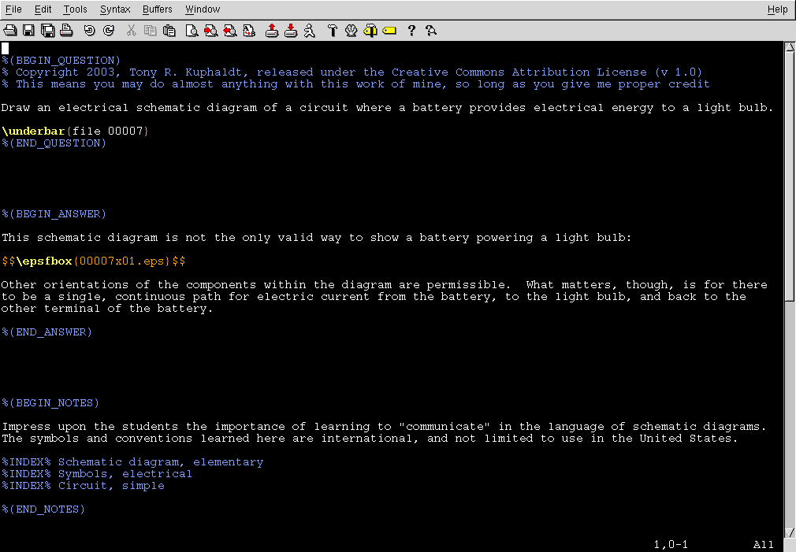

Each "question file" actually contains the question, a brief answer, and notes for instructor use. The file format is TeX, a computer markup language designed for professional-quality typesetting by Donald Knuth of Stanford University.
Each "question" file actually contains the question, a brief answer, and detailed notes (intended for instructor use). A "bare" question file with no content looks like this when viewed in a text editor:
%(BEGIN_QUESTION)
% Copyright 2003, Tony R. Kuphaldt, released under the Creative Commons Attribution License (v 1.0)
% This means you may do almost anything with this work of mine, so long as you give me proper credit
\underbar{file 00000}
%(END_QUESTION)
%(BEGIN_ANSWER)
%(END_ANSWER)
%(BEGIN_NOTES)
%INDEX% (word or phrase here)
%(END_NOTES)
The strange "\" and "%" character entries are escape characters recognized by the TeX text processing program which instruct it how to "mark up" the text in the final document. This is analogous to "tags" used in HTML files to specify how a web page will appear on a browser display. To see what this looks like in a real question, inspect this example (question #00005):
%(BEGIN_QUESTION)
% Copyright 2003, Tony R. Kuphaldt, released under the Creative Commons Attribution License (v 1.0)
% This means you may do almost anything with this work of mine, so long as you give me proper credit
If you scuff your feet across a carpeted surface on a dry
day, you will produce an electric potential resulting from
a static electric charge that may range in the order of
tens of thousands of volts! Can this pose a danger to
you, at least in principle?
\underbar{file 00005}
%(END_QUESTION)
%(BEGIN_ANSWER)
Static electric charges rarely pose any shock hazard,
because the actual charge quantity (measured in
{\it coulombs}) is so small that the resulting current
upon discharge can only last a very brief moment in time.
%(END_ANSWER)
%(BEGIN_NOTES)
This question is a good starting point for a discussion
on {\it time} as a variable in determining electric shock
hazard. There is more to determining hazard to the human
body than a simple assessment of volts, amps, and ohms!
%INDEX% Electric shock
%INDEX% Ohm's Law, conceptual
%(END_NOTES)
Note how italicized text is denoted in the TeX language: by using a set of symbols like {\it this}.
In case you were wondering, the "comment" lines (beginning with a % symbol) containing the words "BEGIN" or "END" are actually necessary for the question file to be divided and sorted properly. Even though such "comments" are technically optional in the TeX language, they are necessary here to demarcate the "Question", "Answer", and "Notes" sections of each file. In essence, these comment lines form an extension of the TeX markup language's functionality, meaningful only when processed by the sed scripts written specifically for the Socratic Electronics project.
Be sure not to alter the "BEGIN" or "END" lines at all! If they are altered in any way, the sed scripts will not properly interpret them, and the resulting worksheet may not be properly formed. I always start each new question file with a verbatim copy of the file 00000.tex (shown at the top of this page), copied to the new filename, and then add the question, answer, and notes text to it. This way, I do not have to re-type any of the comment lines.
The commented lines beginning with "%INDEX%" contain reference words, which will be searched to form an index of terms and phrases. The purpose of this is to have a reference for people to find question files pertinent to certain topics. These lines are optional (they don't even have to be in the question file at all), but I recommend you include them so that others may find your question file when searching for a particular topic.
Encapsulated PostScript Graphic images (.eps) are easily included with the TeX markup format. Take this question file, for example (question #00007):
%(BEGIN_QUESTION)
% Copyright 2003, Tony R. Kuphaldt, released under the Creative Commons Attribution License (v 1.0)
% This means you may do almost anything with this work of mine, so long as you give me proper credit
Draw an electrical schematic diagram of a circuit where a
battery provides electrical energy to a light bulb.
\underbar{file 00007}
%(END_QUESTION)
%(BEGIN_ANSWER)
This schematic diagram is not the only valid way to show
a battery powering a light bulb:
$$\epsfbox{00007x01.eps}$$
Other orientations of the components within the diagram
are permissible. What matters, though, is for there to
be a single, continuous path for electric current from
the battery, to the light bulb, and back to the other
terminal of the battery.
%(END_ANSWER)
%(BEGIN_NOTES)
Impress upon the students the importance of learning to
"communicate" in the language of schematic diagrams. The
symbols and conventions learned here are international,
and not limited to use in the United States.
%INDEX% Schematic diagram, elementary
%INDEX% Symbols, electrical
%INDEX% Circuit, simple
%(END_NOTES)
The markup command \epsfbox{} tells TeX to include whatever Encapsulated PostScript image is specified within the braces {}. The double dollar-sign symbols at the beginning and end of the line tell TeX to position the image as though it were a mathematical expression: in the center of the page, with adequate margins above and below to set it apart from the surrounding paragraphs. You may prefer different positioning for your images, so feel free to deviate from this convention if you wish.
One of the nice things about writing in a markup language is that you get to view other peoples' markup and see how they accomplish things! Feel free to examine any of the downloaded question files in a text editor and learn how the TeX language works by example. For more information on the incredible typesetting software that is TeX, visit The TeX User's Group on the internet.
I also recommend using a text editor capable of color-syntax highlighting. When doing any form of computer programming -- markup languages included -- a tool like this really helps to reveal syntax errors. My text editor of choice is Vim, a very powerful program with an (unfortunately) steep learning curve:
In this screenshot image, you can see how all the TeX commands are colored differently from the text to be formatted. Not only does this help eliminate syntax errors, but it also helps to teach you how the structure of the markup language works. Several text editors offer color-syntax highlighting for a wide variety of markup languages and computer programming languages, so you don't have to use Vim if you don't want to.
Note the naming convention I use for graphic images: begin with the numerical name of the question file (in this case, 00007), then complete the name with the letter "x" and a two-digit number, plus filename extension (x01.eps in this example). This numbering scheme allows for 100,000 different question files, and 100 possible images per question, while not exceeding eight characters of length in the filename (for old MS-DOS filesystem compatibility, just in case). For more information regarding graphic image format and creation, click here.
The convention of naming all question files by number, and their respective graphic images by number as well, is my own arbitrary choice. It is not required by the TeX markup language, nor by the computer scripts which assemble the individual questions into complete worksheets. If you desire to name your own question files and/or image files differently, you are free to do so.